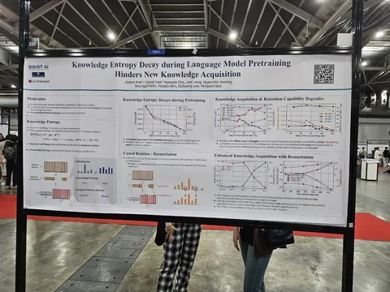
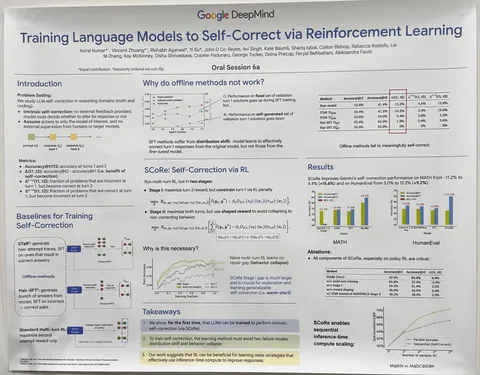
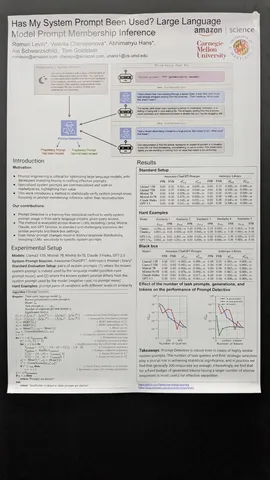
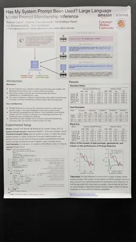
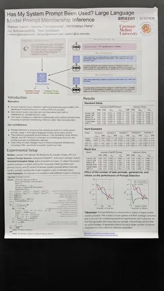

Свежая подборка интересных статей, чтобы скрасить вечер понедельника.
Knowledge Entropy Decay during Language Model Pretraining Hinders New Knowledge Acquisition
Интересная статья о забывании фактов. Известно, что факты хранятся в FF, но авторы посмотрели на динамику распределения весов в виде векторов, чтобы понять, почему плохо усваиваются знания после самого претрейна. Оказывается, всё распределение лежит в маленьком проценте векторов, и они сильно портятся от дообучения.
Training Language Models to Self-Correct via Reinforcement Learning
Вместо промптинга, файнтюнинга и использования отдельной модели авторы пытаются встроить self-correction в модель. Существующие решения либо требуют отдельных моделей для верификации, либо используют более крупные модели-учителя, либо страдают от проблем «смещения распределения» (модель исправляет чужие ошибки, но не свои) и «схлопывание поведения» (модель делает одинаковые попытки без реальной коррекции).
Авторы предлагают двустадийное решение задачи, где вторая попытка пытается исправлять ошибки первой.
Детали успеха:
— на первом этапе создается хорошая инициализация для RL c принуждением первой попытки быть близкой к базовой модели (KL-регуляризация);
— on-policy RL;
— модифицированный реворд, сравнивающий прогресс между попытками.
Learning Reward and Policy Jointly from Demonstration and Preference Improves Alignment
Статья о совместном обученим RL+SFT+RM. Всё в онлайне. Реворд учится не только преференсам, но ещё и поощрять экспертные демонстрации из SFT-датасета.
Лоссы довольно понятным образом можно вывести
В цикле:
— шаг обучения RM;
— несколько шагов PPO.
Accelerating Transformer Inference and Training with 2:4 Activation Sparsity
Авторы придумали как использовать sparse kernel в тренировке. Заменяют SwiGLU на Squared ReLU (утверждается, что без потери качества), и замечают, что после этого во втором матричном умножении появляется много нулей в активациях. Используют 2:4 sparse kernels для того, чтобы ускорить это умножение (зануляя активации, которые ломают 2:4 картинку).
На backward из-за того, что матрица транспонируется, приходится использовать пару трюков:
— разбивать матрицу на две части — «очень плотные строки (5%)» и «разреженные строки (95%)» — и делать два отдельных гемма;
— чтобы бороться с явлением «соседние токены часто либо одновременно нули, либо одновременно не нули» шафлят токены перед FFN, а потом шалят обратно;
— используют row-wise-квантизацию;
— получают x1.3 ускорение на FFN-блоках.
В статье почему-то описывают только 1.5B-перплексию, но говорят, что на 7B и downstream-задачах вроде тоже работает неплохо.
Has My System Prompt Been Used? Large Language Model Prompt Membership Inference
Инженеры Amazon предлагают довольно простую процедуру расчёта стат.теста для проверки, использует ли LLM новые вводные из системного промпта. Тест основывается на средних значениях бертовых эмбеддингов того текста, который сгенерировала LLM. По словам авторов, для статистической значимости даже на незначительных изменениях достаточно прогнать около 300 примеров для каждого промпта.
*Компания Meta признана экстремистской организацией в России.
Интересные постеры увидели
#YaICLR
Душный NLP
 

